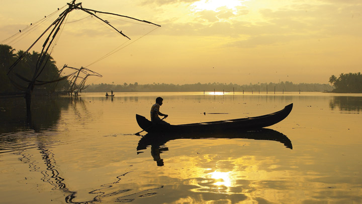

-
Around two dozen kilometres from the industrial district of Ernakulam and to the side of the Vypeen Island lies every swimmer’s paradise, Cherai Beach. It is a favourite haunt of those looking for a relaxing swim with the backdrop of coconut groves being the added incentive. It provides a wonderful view of the famous Chinese Fishing Nets or Cheena Vala well. The nearby shacks provide you with fresh cuisine that fills you up perfectly after a delightful swim.
-
Wonderla has evolved into one of the premier amusement parks in the country. Located in Kochi, it is also regularly rated among the most visited spots in Kerala. People from across the country throng here to enjoy a multitude of rides and attractions. It is the first ISO 14001 (for environmental protection) and OHSAS 18001 (for safety) certified amusement park in India. Since 2000, it has entertained vacationers and locals alike with more than 50 rides on offer. The land and water rides are famous for the thrilling experiences they offer.
-
Willingdon Island is among the most beautiful locations in the Kochi area. This man-made island, named after a former Viceroy, is among the biggest of its kind in India. It is a major commercial centre and has some of the best hotels in the city. It is also home to the Kochi Naval Base of the Indian Navy, the Central Institute of Fisheries Technology and the Port of Kochi.

Willingdon Island, Kochi
-
If you escape from the hustle and bustle of Ernakulam city, head to Fort Kochi in the western direction. You enter a different time zone and geography there. With high-rises giving way to colonial buildings, flashy shops to traditional establishments, fast-paced footsteps to strolls, life takes a different turn here.
-
Kumbalangi Integrated Tourism Village Project is a unique initiative to transform the tiny island of Kumbalangi into a model fishing village and tourism spot. It is the first of its kind in India and is located in Kochi. It is blessed with many natural wonders and the people who visits are treated to many a rare treat.
Kumbalangi Tourism Village, Kochi